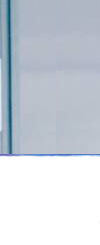
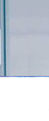
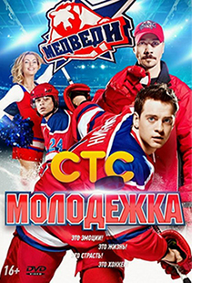

|  |  | |||
| |  | |||
|  | Жанр: драма |
||
Страна: Россия | |||
Режиссёры: Сергей Арланов, Андрей Головков | |||
Музыка: Леонид Ленер | |||
Цитата: Хоккей — это когда тебя ломают, гасят силы, надежду, а ты всё равно выходишь на лёд и играешь, несмотря ни на что. | |||
Описание: «Медведи» никогда не были лидерами своей лиги. Но теперь все будет по-другому — за команду берется новый тренер Сергей Макеев. Когда-то он блеснул в НХЛ, но после травмы завершил карьеру игрока. Перед новоиспеченным тренером стоит невыполнимая задача — выиграть чемпионат и превратить команду любителей в настоящих профи. Но вот только как это сделать, ведь у его игроков в их 15-17 лет есть еще так много интересных дел. Да и в клубе не все рады приходу слишком активного новичка… | |||
Премьера телесериала состоялась на канале СТС 7 октября 2013 года в 21:00. Первый сезон состоит из 40 серий. 2 октября 2013 года издательство «Эксмо» выпустило первую книгу серии «Детская Молодёжка» под названием «Первый матч», автор: Екатерина Неволина. 16 и 17 декабря 2013 года на канале СТС в 21:00 был показан «Молодёжка. Фильм о фильме». 21 ноября 2013 года канал СТС продлил сериал на второй сезон, который состоит из 40 новых серий. Второй сезон создан при финансовой поддержке Министерства культуры Российской Федерации. Премьера первой части второго сезона (серии 41—60) состоялась на канале СТС 17 ноября 2014 года в 21:00. Премьера второй части второго сезона (серии 61—80) состоялась на канале СТС 26 января 2015 года в 20:00. 12 января 2015 года издательство «Эксмо» выпустило вторую книгу серии «Детская Молодёжка» под названием «Шанс на победу», автор: Анна Антонова. 26 февраля 2015 года в 22:00 на канале СТС был показан «Молодёжка-2. Фильм о фильме», в котором режиссёр-постановщик Сергей Арланов официально объявил о том, что сериал продлён на третий сезон, который состоит из 40 новых серий. 3 марта 2015 года на официальном сайте телеканала СТС была размещена для онлайн-просмотра полная версия «Молодёжка-2. Фильм о фильме», включающая в себя ранее не демонстрируемые в эфире эпизоды. 27 мая 2015 года стало известно, что Министерство культуры Российской Федерации финансово поддержало съёмки третьего сезона сериала. Съёмки третьего сезона проходили с 27 апреля по 19 октября 2015 года. Премьера первой части третьего сезона (серии 81—100) состоялась на канале СТС 26 октября 2015 года в 20:00. Премьера второй части третьего сезона (серии 101—120) состоялась на канале СТС 25 января 2016 года в 21:00. Телесериал был продлён на 52-серийный четвёртый сезон, съёмки которого проходили с 27 марта по 12 ноября 2016 года. Четвёртый сезон получил название «Молодёжка. Противостояние». Премьера четвёртого сезона состоялась на канале СТС 17 октября 2016 года в 20:00. Сезон поделён на 2 части: 24 серии (121—144) были показаны с 17 октября по 24 ноября 2016 года в 20:00, а оставшиеся 28 серий (145—172) были показаны на СТС с 13 марта по 27 апреля 2017 года в 20:00. 19 ноября 2016 года телесериал был официально продлён на 44-серийный пятый сезон, съёмки которого стартовали 27 марта 2017 года. 30 августа 2017 года за пять дней до премьеры на ТВ, на сайте канала СТС состоялась платная интернет-премьера первых серий пятого сезона. В платном доступе серии появляются со среды по воскресенье, за пять дней до их эфира на канале СТС. Стоимость просмотра серий в месяц составляет 299 рублей. Пятый сезон получил название «Молодёжка. Взрослая жизнь». Премьера пятого сезона состоялась на канале СТС 4 сентября 2017 года в 20:00. Сезон поделён на 2 части: 24 серии (173—196) были показаны с 4 сентября по 12 октября 2017 года в 20:00, а оставшиеся 20 серий (197—216) вышли в эфире СТС с 15 января по 15 февраля2018 года в 20:00. Телесериал был продлён на финальный 44-серийный шестой сезон, съёмки которого стартовали 2 апреля 2018 года. Шестой сезон получил название «Молодёжка. Финальная игра». Премьера финального сезона состоится на канале СТС осенью 2018 года.
| |||